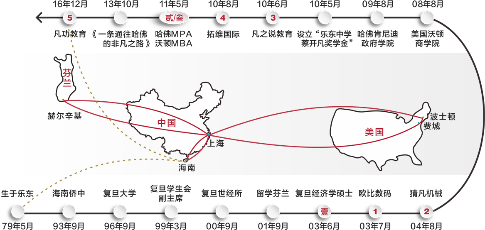
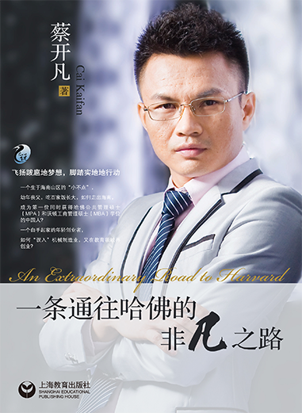

欢迎来到凡功教育！


凡功创始人
凡功教育由首位同时获得哈佛大学MPA、美国沃顿商学院NBA学位的中国人——蔡开凡先生创立

蔡开凡，毕业于哈佛大学，青年企业家。他先后就读于复旦大学、芬兰赫尔辛基大学、美国宾夕法尼亚大学、哈佛大学，拥有经济学硕士、工商管理硕士、公共管理硕士等 三个硕士学位，共接受十年高等学历教育。
蔡开凡出生于海南乐东，本科就读于复旦大学生命科学学院，曾任校学生会副主席。 2000年跨专业考研进入复旦大学经济学院世界经济研究所，读研期间赴芬兰赫尔辛 基大学交流学习一年，获复旦大学经济学硕士。2008年赴美就读于宾夕法尼亚大学沃顿商学院（The Wharton School），所获荣誉包括沃顿创始人奖学金、校友冠名创业奖学金、院长名单（Director's List）、优秀毕业生（Graduation wi th Honors）。2009年赴哈佛大学就读肯尼迪政府学院（Harvard Kennedy School）与沃顿商学院合办的三年制双学位项目（HKS MPA-Wharton MBA dual degree program），获哈佛高额奖学金。2011年5月，蔡开凡成为首位同时获得沃顿商学院工商管理硕士（MBA）和哈佛大学公共管理硕士（MPA）学位的中国人。
蔡开凡从研究生毕业就开始创业，先后涉足信息技术、制造业和教育领域，曾任欧比数码科技（上海）有限公司董事总经理、北京拓维国际教育咨询有限公司首席执行官兼首席知识官，并在国际咨询公司、私募股权基金和上市公司任职。 2016年12月，蔡开凡创立了凡功教育并任董事长 兼校长，同时还续任上海猜凡机械有限公司董事长、上海凡之说教育信息咨询有限公司董事长、北京拓维国际教育咨询有限公司高级董事。
蔡开凡曾多次在全国范围开展励志公益主题演讲，分享其求学和创业经历，推崇思维方式训练和素质教育。2010年5月，为激励家乡学子，蔡开凡在母校乐东中学设立了“蔡开凡奖学金”，一是为了激励成绩优秀的学生，二是奖励进取心强的学生，三是鼓励学习进步的学生。
蔡开凡先生求学创业轨迹（三个硕士学位、五次创业经历）
凡功简介
凡功教育由首位同时获得哈佛大学MPA、沃顿商学院MBA学位的中国人——蔡开凡先生在他的家乡海南创立，专注于为10-18岁的中国孩子提供世界一流的教育资源以及教育服务。我们用心关注每一位学员的个性发展，在帮助学员取得学术成就的同时，唤醒学员的生命感和价值感，并全面培养学员的品格。
作为由全美教育协会领导的21世纪技能合作组织（P21）成员，凡功教育不仅与美国中小学共享最新的优质教学资源和教育服务，更得到了培生（Pearson）和霍顿·米夫林哈考特（HMHG）等世界级教育出版集团的直接支持。
凡功推出的美国语文课产品，采用全球最佳教学实践经验，给学员原汁原味的美式课堂体验以及无以伦比的个人关注，同时也实现了国内中小学英语考点的全覆盖，重点训练并提升学员的思辨能力、创新能力、沟通表达能力与团队合作能力，从而让学员在追逐梦想的征途中胸有成竹、运筹帷幄、游刃有余。
功坚信，秉承“谦虚、勤奋、精确”的校风，每位学员在完成课程后，都将成长为品学兼优、意志坚定、风趣幽默的生活斗士。
凡功文化
（谦虚 勤奋 精确）
凡功教育校徽释义
- 校徽整体用圆，取意天圆地方与外圆内方，凡功遵循教育的自然属性，培养学员的完整人格，终点亦是起点，拼搏永无止境；
- “凡功教育”印在历史悠久的卷轴上，警醒我们始终要谦虚与求真；
- 绶带上的十字校训“下平凡功夫，创不凡功绩”体现凡功的灵魂理念，只有通过日积月累的努力，才能实现每一个不平凡的目标；
- 圆心的大书象征导师们授业解惑，留白的小书象征学员们书写属于自己的精彩人生；
- 深红色的GA是Great Achievement的首字母缩写，直译为“伟大成就”，意译即“不凡功绩”。
- mission 帮助学生全面接触世界一流教育资源
- vision 成为深受学生和家长信赖的教育品牌
- value 学生进步是我们每天不懈努力的理由
校长致辞
欢迎来到凡功！
凡功教育致力于帮助学生全面接触世界一流的教育资源，我们用心关注每一位学生的个性发展，在帮助学生取得学术成就的同时，唤醒学生的生命感和价值感，并全面培养学生的品格。
作为土生土长的海南人，我十七岁离开宝岛到复旦求学，之后又从上海到芬兰，再到美国沃顿和哈佛，先后共接受了十年高等教育，获得三个硕士学位。西方学生的思维方式、学习方法、运用知识的能力和团队合作的精神，对他们国家的发展起到了重要的推动作用，这让我深受启发、受益匪浅。
一直以来，我都有一个梦想——在海南建一所学校，不仅是尽自己的一份力量去改变家乡，更希望把世界一流的教育资源带给中国学生。如果说，知识与技能可以在短时期内培养起来，那么，思维与文化的建立就是一个任重道远的长期事业。凡功教育的创立，正是实现这一梦想的第一步。
作为由全美教育协会领导的21世纪技能合作组织（P21）成员，凡功教育不仅与美国中小学共享最新的优质教学资源和教育服务，更得到了培生（Pearson）和霍顿·米夫林哈考特（HMHG）等世界级教育出版集团的直接支持。
凡功教育于2017年6月推出的凡功美国语文课，是一门关注学生未来发展的课程，采用全球最佳教学实践经验，给予学生原汁原味的美式课堂体验以及无以伦比的个人关注，同时也实现了国内青少英语考点的全覆盖，重点训练并提升学生的思辨能力、创造性与自主学习能力、沟通表达能力和队合作能力，从而让学生在追逐梦想的征途中胸有成竹，运筹帷幄，游刃有余。
凡功坚信，秉承“谦虚、勤奋、精确”的校风，每位学生在完成凡功课程后，都将成长为品学兼优、意志坚定、风趣幽默的生活斗士。
让我们一起“下平凡功夫，创不凡功绩”！
蔡开凡相关报道
海南综合频道“风范”访谈哈佛学子蔡开凡视频（点击播放）
(2013-07-13)蔡开凡历时5年以“自述成长故事”方式所著的《一条通往哈佛的非凡之路》已由上海教育出版社于2013年10月出版发行。该书得到了包括曾培养出2001年诺贝尔经济学奖获得者的哈佛大学博士生导师泽克豪泽教授在内的许多中外教授和欧洲企业家的大力推荐。
内容简介：
你可以说这是一个山区小男孩的成长史，也可以说这是一个一无所有的男人的奋斗史，但其实，这就是段生活—真实而客观的生活。蔡开凡是成功的吗？虽然，从山区走出，考入复旦，又求学于沃顿和哈佛，现在拥有两家公司，已然是一只山区里飞出的“凤凰”， 但他还算不上成功。这本书，褪去了他所有的光环，还原了他的生活。你能从中看到个人的成功，有缘分、有机遇，但切也都“有迹可循”，也都“事出有因”。这就是一本描述 “事”和“迹”，探寻“果”和“因”的书。当你静下心来阅读，你会发现，无论你是一名学生，还是一名家长，抑或是对创业跃跃欲试的年轻人，都能从中有所悟有所得。
目录：
第1部分 求学之路
1 家穷志不短的少年 垂涎苹果 人生启蒙 无肉河粉 体味艰辛 甘蔗电玩 择优从善 读报“特权” 迷恋新闻 课堂顽劣 罚坐“专座”
2 发愤图强的中学生 尝试跳级 虽败犹荣 自组球队 挑战权威 拖鞋少年 被拒门外 舍近求远 奔赴省城 叛逆少年 自尊作祟 勇于受助 学会感恩
3 取舍从容的大学时代 热门学校 冷门专业 起点落后 寻找突破 五音不全 一鸣惊人 短暂失忆 超越自我 六份家教 撑起生活
4 背水一战的考研历程 “及格万岁” 破釜沉舟 人生挚友 一生榜样 四十分钟 有惊无险
5 自我沉淀的研究生三年 三日被炒 知耻后勇 人生如棋 我是棋手 事无巨细 位无高低 蹩脚口语 知难而上 良师益友 价值交换
6 超乎想象的欧洲游学 北欧留学 深感平和 红场遇险 以退为进 雅典中套 以诚相劝
查看折叠信息
推荐语：
读完本书，你将学会如何“跳出盒子”思考（突破思维定式），如何给你所处的社会创造重要的价值。
——理查德·泽克豪泽，哈佛大学拉姆塞政治经济学讲席教授与蔡开凡相识之初，我就被他的活力和幽默所感染。十三年后的今天，他的正直以及那种想改善自我和周边事物的无限动力给我深刻的印象。蔡开凡是一个没有边界，可以跨文化沟通的人。我敢说，他是一位可以给中国和世界带来变化的人。
——汉宁·克里斯托费森，挪威船级社可持续风险管理部首席咨询顾问让我感到意外的是，高中毕业仅十三年后，蔡开凡主动来跟学校联系，希望能够在母校设立一个奖学金，当我们听到这个消息后都非常激动。自从2010年夏季以来，每年都有一两百名学生得到“蔡开凡奖学金”的资助。
——汪祥夫，海南省乐东县政协副主席、县教育局局长、乐东中学校长查看折叠信息
海口晚报《哈佛之路是这样走出来的》
（2013-9-30）
他是一名来自海南农村的小伙，家境的贫寒让他从小就懂得了生活的不易，在他人蔑视的目光中，他发奋学习，希望以此来改变自己和家人的命运。从县城小学，到海南侨中，到复旦大学，再到哈佛大学。他的故事，或许能唤醒一些当下过度消费的学子，珍惜父母辛勤的劳动以及由此换来的每一分钱，珍惜眼前的学习时光，使它成为自己幸福生活的真实基础。因为，“每一个你讨厌的现在，都有一个不够努力的曾经”。
□本报记者 丁宁
一个苹果和一碗河粉
——世界上最遥远的距离就是，我和你一起出门，你去买苹果“4代”，而我去买4袋苹果。
蔡开凡出生在海南省乐东县九所镇四所村，这是一个贫穷落后的海边小村庄。面对生活的现状，年幼的他在懵懂中意识到生活的不容易。
查看折叠信息
海南日报《哈佛学子蔡开凡的海南教育梦》
（2013-10-14）
文\海南日报记者 马 珂
海南小伙蔡开凡是同时获得美国沃顿商学院MBA学位与哈佛大学肯尼迪政府学院MPA学位的优秀学子。在蔡开凡的成长经历中，其实秉承了从晏阳初以来的中国知识分子一直追求的教育梦。他在全国范围内举办多次公益讲座，签售新书，将所得收入用于学校教育。蔡开凡的梦想合着时代的节奏，向学子们展示一个充满希望的前景。
从海南乐东一名吃百家饭的寒门学子，到获得世界顶级学府哈佛大学公共管理硕士学位。蔡开凡用27年求学路，演绎了一段海南版《当幸福来敲门》的励志传奇。
摘下传奇的光环，略去赞许的浮华。时间沉淀下的是蔡开凡对教育的思考。
“在海南建一所大学，让孩子们能接受国际一流学校的教育理念”是他毕生志愿。
查看折叠信息
海南日报《哈佛学子蔡开凡新书义卖》
(2013-11-14)
13日下午，以蔡开凡亲身经历为题材的系列丛书《一条通往哈佛的非凡之路》在母校海南华侨中学首发义卖，义卖金将以奖学金形式鼓励海南学子，支持海南教育事业。
海南乐东人蔡开凡，获得哈佛大学肯尼迪政府学院公共管理硕士(MPA)和美国沃顿商学院工商管理硕士(MBA)学位。从贫困学子到进入世界顶尖学府求学，蔡开凡历时5年以“自述成长故事”方式著成凡之说系列丛书《一条通往哈佛的非凡之路》。
该书得到了包括曾培养出2001年诺贝尔经济学奖获得者的哈佛大学博士生导师泽克豪泽教授在内的中外教授和欧洲企业家的推荐，蔡开凡于本月11日-14日在海南华侨中学、海南中学、海口市实验中学和海口市第一中学进行海南环岛励志公益演讲并签名义售，他将此次义售的收入全部纳入“蔡开凡奖学金”，鼓励海南学子努力读书。（马珂）


版权所有© 2016-2017